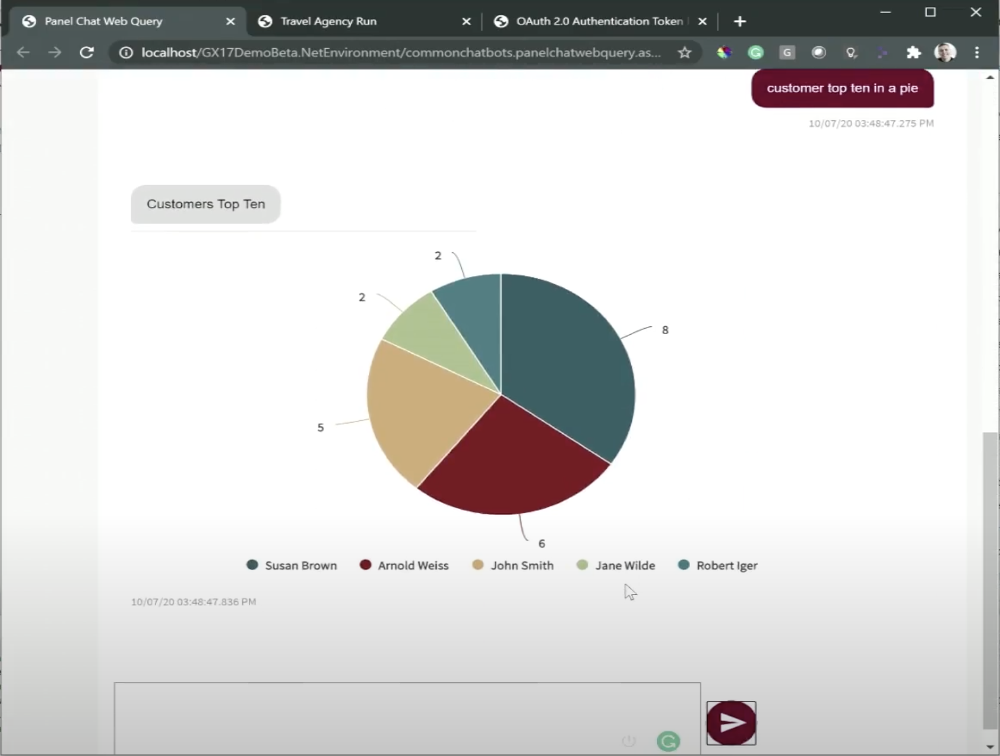
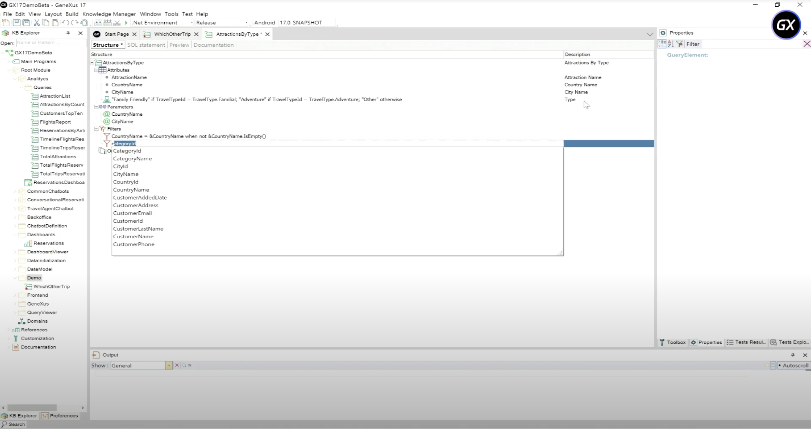

The interaction of users with systems and data occurs through multiple touchpoints, depending on the moment and the context. Creating, maintaining, and updating those changing touchpoints is time-consuming and costly. With GeneXus 17, you reduce the time to market and effort, as well as the cost of creation and maintenance of the multiple experiences and touchpoints. The keys to achieving this are the Chatbots Generator, much simpler ways to incorporate friendly design to your projects, and the brand-new Angular Generator. Chatbot GeneratorThe chatbot generator initially was intended to automatically build and deploy a chatbot to any of the supported Natural Language Processing providers, and now has evolved to a broader objective: To be the simplest way to create and evolve an Omni-channel chatbot (AI-driven or scripted), integrated into your solution. Therefore, chatbots can now be Scripted Chatbots, or accessed using Whatsapp (through partners like Botmaker, Twilio, or any other). Handing over to humansWhen your users need more information than what the chatbot can handle, you don't want them to get frustrated, you want their questions answered. A good option is that some people could help them out. That's why chatbots can now can hand over a conversation to a human agent. Reporting in ChatbotsChatbots are fully integrated into your solution, and building blocks like Query Objects can now be reused in chatbots which allows your users to ask for information that can now be handed out through charts, pivot tables, and other data visualization options at the chatbots omnichannel touchpoints.  Simplified modeling of ChatbotsIn addition, modeling those conversational flows has become much easier since a new Conversational Flows Editor has been added and flows can be initialized from Business Dashboards. More information at Chatbots in GeneXus. Friendly URLsA friendly URL has to be part of the design, to improve SEO, to improve UX in general. Part of the URL are its parameters, and how they are written in the URL is important not just for us humans who read an URL, but also for programs like Web Application Firewalls that already have predefined rules that expect the URL to be written in a certain way. That is why GeneXus 17 adds a new Object to model friendly URLs and also, by default, names the parameters and uses ampersand as their separator. What's more, in Java, by default the '/servlet/' is no longer part of the URL. Note that by using all these features together, you also achieve another kind of feature: The URL of an application built with any generator (Java, .NET, .NET Core) looks the same, so now you get even less platform lock-in. More information at URL Rewrite object, Parameters Style property New and improved UI Controls for WebSeveral new controls have been added to the toolbox that add flexibility to the design. These are: Canvas control, Smart Table control. User Control Object improvedThe User Control object got improvements too, adding the possibility to add external Angular controls (for Angular generator only) and also for Creating SAPUI5 controls in GeneXus. Grid's State persistence in WebState information such as pagination position, filtering, and sorting can be read, changed, and also handled automatically by the programs. Progressive Web Applications (PWA)The Web is designed to reach the masses and the Native Mobile apps to get their loyalty. The main objective of Progressive Web Applications is to reach more clients by giving them a deeply engaging user experience when they land on their website. In GeneXus 17, you can set your main Web Panel object to be the entry point of a PWA. New UI Controls and APIs for Native MobileNew UI controls have been added to facilitate the creation of new experiences:
Artificial Intelligence on the EdgeAs the power of devices is increasing, and the amount of data collected by these devices is enormous, the need for processing, analyzing, and filtering data on the device (on the edge) is also increasing. Therefore, GeneXus 17 adds support for MLKit in Android. More information at GeneXusAI Overview. Reporting everywhereYou may have read it in the previous sections, but the evolution of reporting in GeneXus 17 is such that it deserves a special note: Modeling queries using the Query object has major benefits since now you can get the results on any channel:
 Angular Generator (Beta)Architectured for Enterprise-grade Performance in the front end, this generator simplifies the creation of a progressive web experience. It has been built to meet the highest UX and security standards. More information at Angular applications development. |
| Backlinks | |
| Flexibility and Quality with Genexus 17 | Toc:GeneXus 17 |